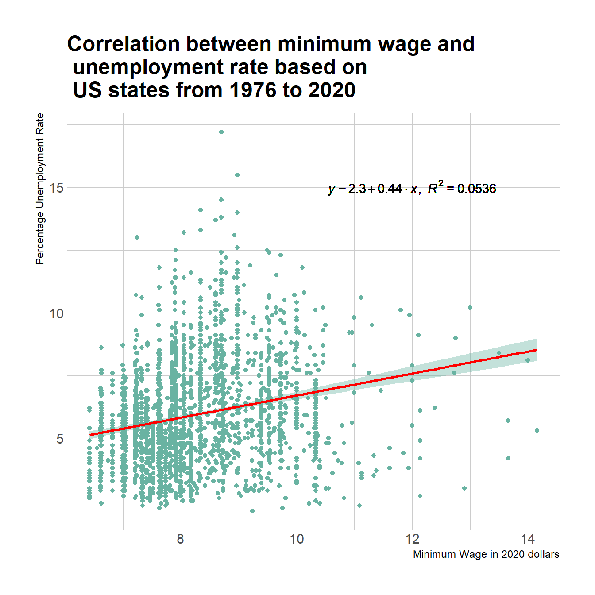

A data visualization and analysis on US labor economy.
The labor economy is the study of the labor force as an element in the process of industrial and economical production. The labor force comprises all those who work for gain within the labor market, whether as employees, employers, or as self-employed, but also the unemployed, who are seeking work.
In my data visualization, I will be tackling how labor economical variables, including unemployment rate, labor participation rate, minimum wage, real GDP per capita, and average hourly wage evolved over the last 40+ years in United States. I will be doing a lot of time-series graphs to show the development of US labor economy from 1976 to near-present years for all 50 states plus District of Columbia.
My dataset is manually collected from Federal Reserve Economic Data (https://fred.stlouisfed.org/), containing a total of 1021 observations regarding the US minimum wage, unemployment rate, and real GDP etc.
The first visualization is a time series of 2 variables: Percentage labor force participation and the percentage unemployment rate in US as a whole nation. Users can interact the graph by clicking on the graph itself. At the top-right of the graph, there is a line of colored text showing the month and year you are currently clicking on, and its corresponding labor participation rate and unemployment rate to that particular month and year. Users can also use the slider range controls at the bottom to adjust the month year range, that is, to enlarge or shrink the graph.

Moving on from the general time series, the second visualization aims to find a relationship between the minimum wage (in 2020 US dollars, inflation adjusted) and unemployment rate. A linear regression line is drawn on the scatterplot. The equation and R-squared statistic is shown at the upper-right position of the plot. The linear regression analysis suggested that there is a positive relationship between the minimum wage and unemployment rate. That is, an increase in the minimum wage may increase unemployment rate.
The third visualization aims to find a relationship between unemployment rate and kaitz index, which is the ratio of the nominal legal minimum wage to average hourly wage adjusted for the industry-level coverage. Unlike minimum wage variable, Kaitz index is a better key to measure the employment effect on minimum wage and average hourly wage. I found that throughout the years, there is no significant relationship between unemployment rate and Kaitz index. This is interesting since in the previous visualization I found a positive relationship between unemployment rate and minimum wage.
The fourth visualization aims to display the unemployment rate, labor participation rate, and minimum wage by years and states. A US map is visualized with interactions. Users can hover on the map to check the unemployment rate, labor participation rate, or minimum wage of a state.
After the visualizations by state, the fifth visualization aims to display the unemployment rate, labor participation rate, and minimum wage by distributions. For all three variables, I used counting distributions.
The last visualization is also a scatterplot between the real GDP per capita and average hourly wage on 50 US states plus District of Columbia. Each dot has a unique color that represents a US state/region. The size of the dot represents the resident population of that state. In addition, a time slider is available for user interaction. This time slider can let users to choose the year between 2001 and 2020. Users can also click the Play button to check out the animation of the plot.